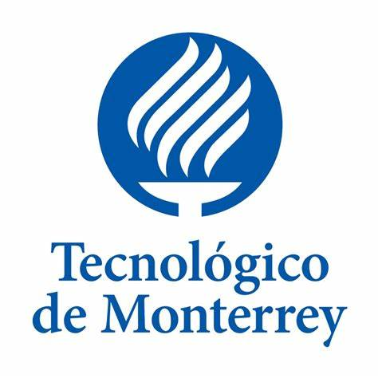
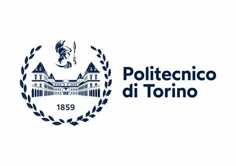
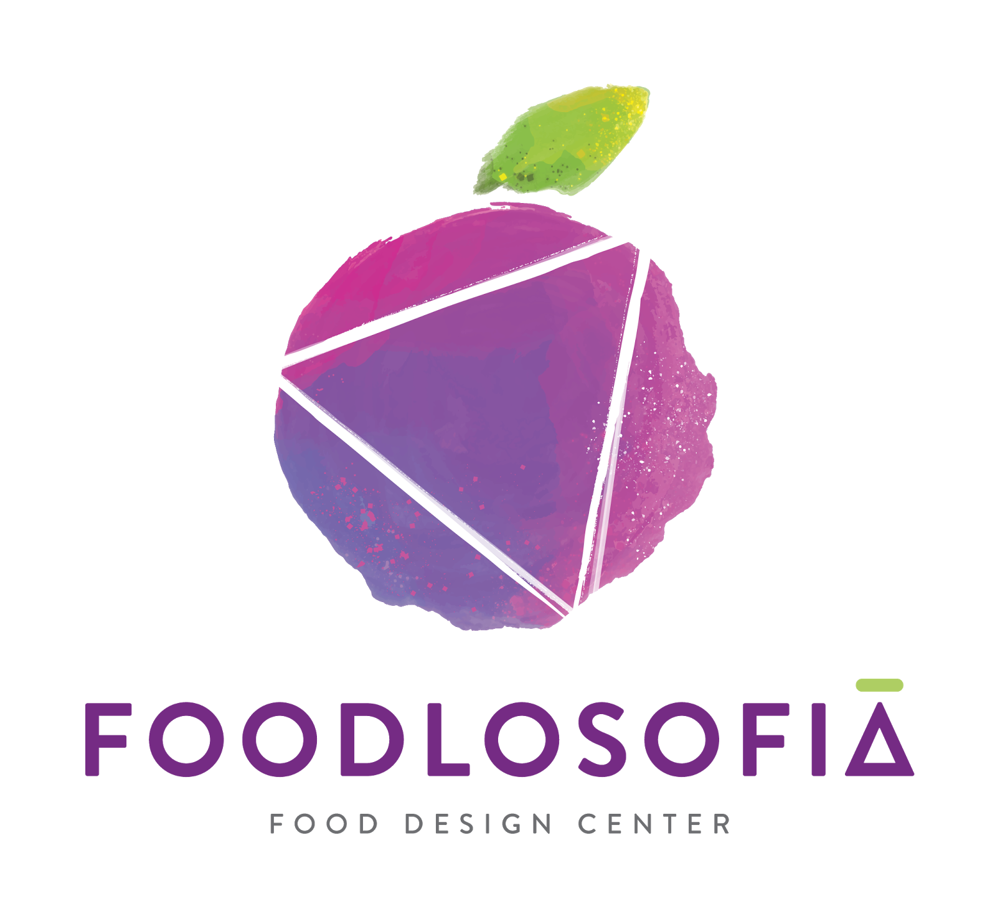
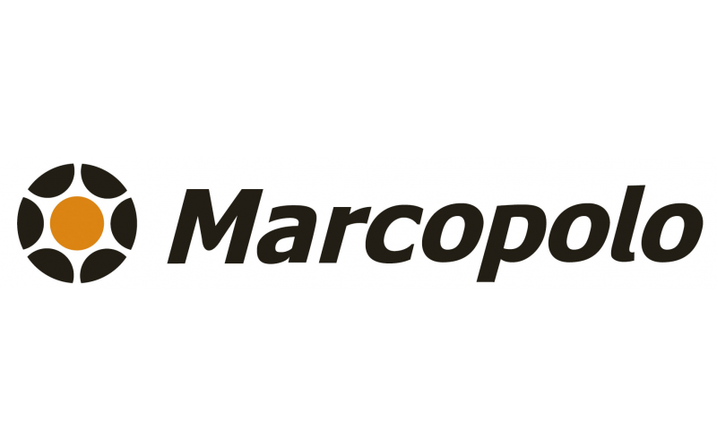

-
Primeros Años
 Estudió
Diseño industrial e Hizo una maestría en diseño de alimentos.
-
Foodlosofia
Fundó Foodlosofia.
Una empresa de diseño enfocada en la industria de alimentos y bebidas.
-
Trayectoria

Trabajo
En diseño de escenarios e innovación, luego como coordinador de investigación y desarrollo.